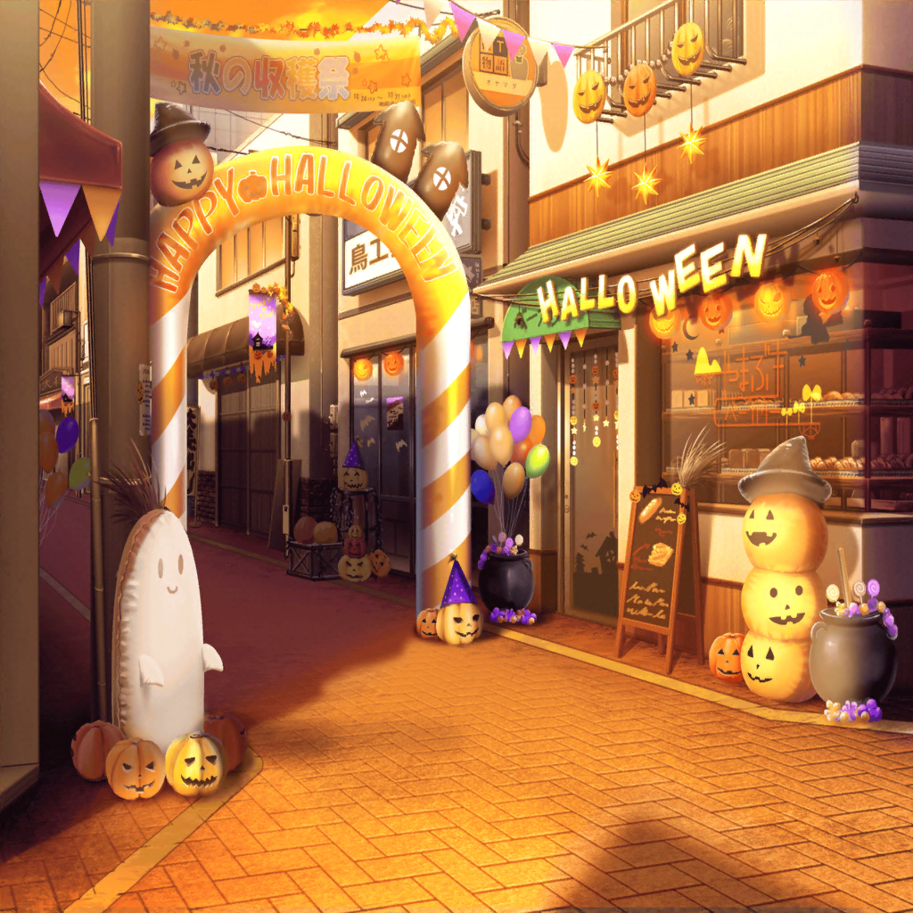

商店街 ハロウィン競争スタート地点
こころ
ミッシェル、準備はいいかしら？
まずはこの辺りの人達に声をかけましょう！
ミッシェル
あ、ちょっと待って、こころ！
ただ闇雲にもらうより、
ちゃんと作戦を立てた方が……い、行っちゃった……
こころ
ハッピーハロウィン！
トリックオアトリート！
お菓子をくれないと、いたずらしちゃうわよ！
通行人
あらあら、かわいい魔女さんね。
キャンディーしかないけど許してちょうだい
こころ
やったわ、ミッシェル！
早速、キャンディーをもらったわ！
こころ
この調子でどんどん集めましょう！
ハッピーハロウィン！
トリックオアトリート！
ミッシェル
はぁ、人の話聞いちゃいないな……まったく
ミッシェル
コホンッ……はーい、こころさん注目ー。
ちょっとこっちに来ましょうねー
こころ
ミッシェル、何かしら？
ミッシェル
今の人はたまたま大丈夫だったけど、
買い物中とかにお構いなしに話しかけたら、
お店の人とかお客さんに迷惑がかかっちゃうよ？
ミッシェル
だからさ、そうならないように、
ちゃんと作戦を考えてやろうよ
ミッシェル
（それと、ミッシェルの状態で、
運動量の多いこころの後を追いかけるのって、
かなりきついし……）
こころ
素敵なアイデアだわ！
いいわ、作戦を決めましょう！
ミッシェル
それじゃあ……
こころは、この白い袋に入ってくれない？
こころ
この袋に入るのね？ それでどうするの？
ミッシェル
うん、それはね……
ミッシェル
みんな～、ミッシェルだよ～。
今日はハロウィンだから、
ミッシェルにお菓子をちょうだい
商店街の人
お、今年もそういう季節か。
ちょっと待ってな。
おーい、母さん！ お菓子、持ってきてくれるか〜！
ミッシェル
わーい！ おじさん、ありがとー。
お菓子は、この白い袋に入れてくれると嬉しいなー
商店街の人
よし、わかった！
それじゃあ、その白い袋をこっちに貸し……
こころ
トリックオアトリート！
みんなのお菓子をもらいにきた魔女さんよ！
さあ、お菓子をちょうだい
商店街の人
おおっ！？
……はははっ、まさか袋の中に
お嬢ちゃんが入ってるなんてな！
商店街の人
これは、いっぱい食わされたな！
おーい、母さん！
やっぱり、家中の菓子を持ってきてくれー！
こころ
ありがとう！
ハッピーハロウィン！
ミッシェル
（おー、まさかこんなに上手くいくとは……
こころが袋の中に隠れて、そこからいきなり飛び出る……
なんて作戦、どうかと思ったけど意外と反応がいい）
ミッシェル
（こうやってあたしがひとつひとつお店を回るようにすれば、
あまり動き回らないですむし、疲れない。
うん、競争が終わるまではこれでいこう）
ミッシェル
はい。
じゃあ、こころ、また袋に入って。
もう１回さっきの作戦で集めるよ
こころ
次は別の作戦にしましょ！
そうね、今度は魔女が箒に乗ってきて
みんなのお菓子を集めにきたってことにしましょう！
ミッシェル
は？ 箒って……あ、勝手に移動しないでっ！
こころ
立ち止まってる時間が
もったいないわ！
いっぱい商店街を回って……って、あら？
怪盗ハロハッピー
やあ、かわいらしい魔女と
パンプキンベアーが来たようだ
こころ
あなた達、
まだお菓子集めを始めていなかったの？
りみ
う、うん……
私が上手にトリックオアトリートって言えなくて……その……
怪盗ハロハッピー
だから練習をしているところなんだ。
お姫様の心の準備ができてから、
お菓子を集めようと思ってね
こころ
そうなのね！
ねえ、りみ。
あたしに言ってみてちょうだい！
りみ
う、うんっ！
えっと……と、トリックオアトリート……！
こころ
いいわね、とってもかわいいわ！
その調子なら、きっと大丈夫よ！
怪盗ハロハッピー
うん、私もこころと同意見だ。
子猫ちゃん、今みたいな感じでいってみようか
りみ
は、はいっ……！
こころ
それじゃあ、お互い頑張りましょうね。
ミッシェル、行くわよっ！
ミッシェル
だから走らないでってばっ！
怪盗ハロハッピー
さて、それじゃあお姫様。
練習の成果を
あそこにいるご婦人で試してみようか
りみ
わ、わかりましたっ！
りみ
（……って、言っても、やっぱり緊張するよぉ～。
は、早く言わないと、通り過ぎちゃう……）
怪盗ハロハッピー
……ふむ
怪盗ハロハッピー
やあ、そこの可憐なご婦人。
このチャーミングなお姫様が
あなたに用事があるみたいなんだ
怪盗ハロハッピー
聞いてもらってもいいだろうか？
りみ
（か、怪盗さん……）
通行人
まあまあ、可憐だなんて恥ずかしいわね。
それでかわいい魔女さん、私に何か用かしら？
りみ
えっと、その……
りみ
（怪盗さんがせっかくフォローしてくれたのに、
何も言えないで終わるなんて……絶対ダメ！）
りみ
すーはー……すーはー……
と、トリックオアトリート……！
お菓子を……くださいっ
通行人
まあ……ふふ、かわいい魔女さんから
お菓子をおねだりされちゃったわ。
……はい、どうぞ。そっちの方も、はい
怪盗ハロハッピー
感謝するよ、ご婦人。
よかったね、りみちゃん
りみ
ちゃんとできた……
お、お菓子もらえました！
怪盗ハロハッピー
君が、頑張ったからもらえたんだよ。
さあ、この調子でもっと集めに行こうか
りみ
はいっ！
怪盗ハロハッピー
ふふ、やはり女性の笑顔というのは素晴らしい。
眩しく輝き、そして……儚い
りみ
（怪盗さん、カッコイイ……
でも、今のセリフ……どこかで聞いたことがあるような……）